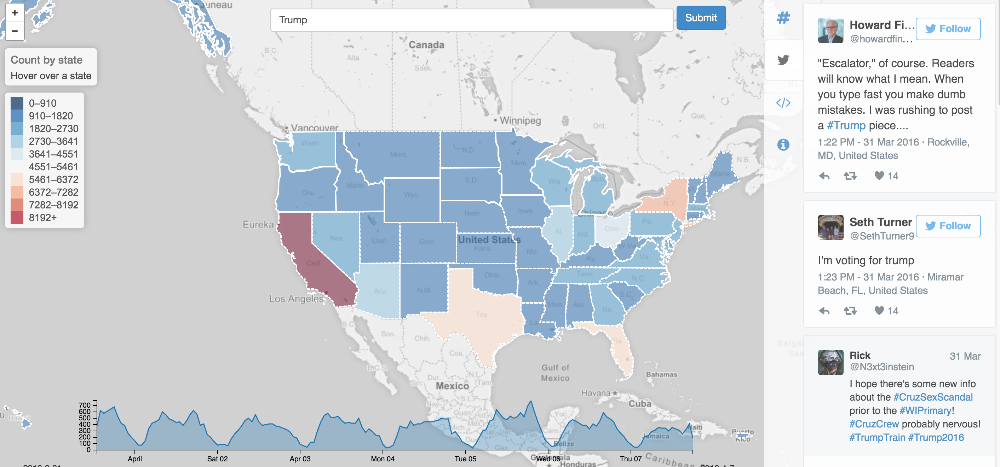

Apache AsterixDB™ is a scalable, open source Big Data Management System (BDMS).
Key Features
- Flexible data model
- Distributed storage and transaction
- Fast data ingestion
- Scalable, data-parallel query execution runtime
- Declarative query language
AsterixDB supports various storage and indexing options:
- Managed datasets, internal LSM-based storage
- External datasets, e.g., data on HDFS
- Secondary indexes, for both storage options.
Flexible Data
Architecture
Example: Interactive Analytics and Visualization on Tweets
Performance Highlights
Tech Talk
Query Demo
Community and Support
If you have any questions, please feel free to ask on our users mailing list, which you can subscribe to by sending an empty email to users-subscribe. Check out the Community page for more details.
If you would like to know more about how to contribute to AsterixDB or any of its related components, head on over to the Contributing page to learn more.